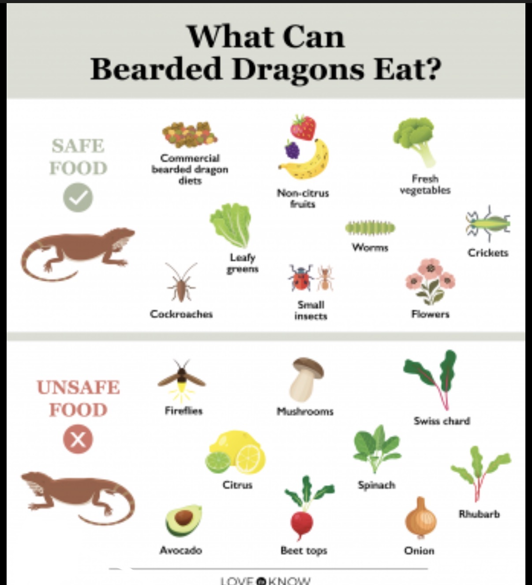
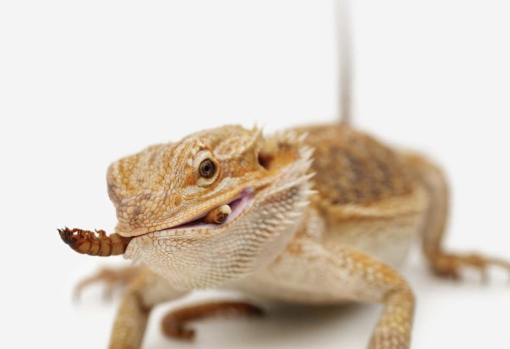
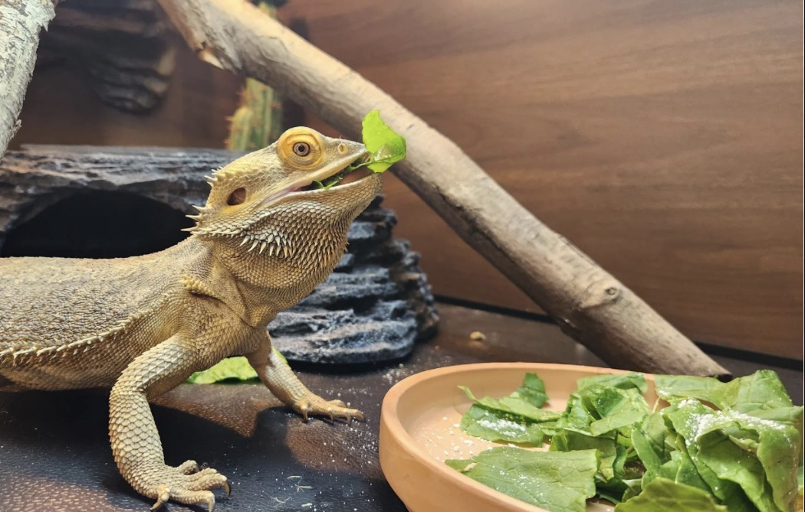

Bearded dragons are omnivores, which means they eat both plants and animals. When they are babies, they need a lot of protein to grow bigger and stronger. Because of this, they mostly eat insects like crickets, dubia roaches, and small worms. These insects give them energy and help their bodies develop. As they grow older, the way they eat starts to change. Adult bearded dragons don’t need as many insects as babies do. Instead, they eat more plants and fewer bugs to stay healthy. Vegetables are a really important part of a bearded dragon’s diet, especially when they are adults. Some good vegetables to feed them are collard greens, mustard greens, squash, and bell peppers. These foods help give them vitamins and keep their bodies working right. It’s also a good idea to give them different kinds of vegetables so they don’t miss out on nutrients. Fruits like strawberries, apples, and blueberries can be given sometimes as a treat. However, fruit has a lot of sugar, so they shouldn’t eat it too often. Foods like iceberg lettuce are not very healthy for them because they don’t have many nutrients. Bearded dragons also need extra vitamins and minerals to stay strong and healthy. Many people sprinkle calcium powder on their insects before feeding them to their dragon. This helps keep their bones strong and prevents them from getting sick. Sometimes, owners also give them vitamin supplements to make sure they get everything they need. It’s important to feed them the right amount of food on a regular schedule. They should always have clean water available, even if they don’t drink a lot of it. Eating a balanced diet helps bearded dragons live longer and stay healthy.


